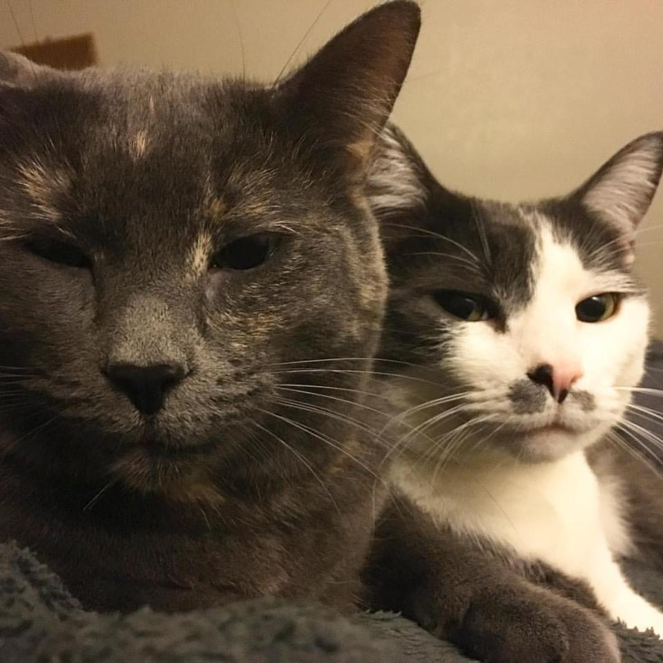

I'm Megan M. Otis
I am a cultural anthropologist, higher educator, scholar, and web developer. I am pursuing opportunities for learning, teaching and research collaboration.
I believe coding is major cultural capital in the 21st century and teaching/learning to code empowers people to go from mere web consumers to web creators.
Web Development
I am interested in...
- Information architecture
- Content strategy
- UX design
- User/usability testing
- Analytics
- Higher Ed Web
Technologies I use...
Scholarship
Education
- Web Development Certificate, School of New and Continuing Studies, Seattle University, 2017
- Master of Arts (MA) in Cultural Anthropology, Western Washington University, 2011
- Bachelor of Arts (BA) in Cultural Anthropology, Minor in Psychology, Western Washington University, 2005
Publications
- Otis, M. M. (2017). Listening to Students: Finding My Voice in the Scholarship of Teaching and Learning. College Teaching and Learning for Change: Students and Faculty Speak Out: p. 214. Miller, M. A. (Ed.). New York: Routledge.
- Otis, M. M. (2011). Engaging and Empowering Students in the Culture of Higher Education: A “Native” Analysis of Students’ Experiences in the Teaching-Learning Academy. Unpublished Master's Thesis. Western Washington University, Bellingham, WA.
- Otis, M. M. (2010). Listening to Students: Finding My Voice in the Scholarship of Teaching and Learning. Change Magazine 42(3):51.
- Murphy, M., Otis, M., Espinoza-Gonzalez, D., Powell, C., & Trujillo, S. (2010). Student Voices on ISSOTL09. The International Commons 5(1):30-31.
- Werder, C, & Otis, M. M. eds. (2010). Engaging Student Voices in the Study of Teaching and Learning. Sterling, VA: Stylus Publishing.
- Otis, M. M., & Hammond, J. D. (2010). Participatory Action Research as a Rationale for Student Voices in the Scholarship of Teaching and Learning. In Engaging Student Voices in the Study of Teaching and Learning. Werder, C. & Otis, M. M. (Eds.). Sterling, VA: Stylus Publishing.
- Werder, C, & Otis, M. M. (2010). Not the Conclusion: Moving from Engaging to Sustaining Student Voices. In Engaging Student Voices in the Study of Teaching and Learning Werder, C. & Otis, M. M. (Eds.). Sterling, VA: Stylus Publishing.
Watch a conversation between Megan and her fellow co-editor of Engaging Student Voices in the Study of Teaching and Learning, Carmen Werder, discussing their book.
Skills
- Teaching, training, and dialogue facilitation
- Collaborative inquiry and co-authorship
- Qualitative research
- Participant observation
- Interviewing
- Focus Groups
- Participatory action research
- Content analysis
About

I am a mother of two fur babies, and member of the "auntie brigade" with one niece-by-relation and many nieces and nephews "by choice."
I'm a Seattle sports fan, a coffee-addict, a proud geek, and bibliophile with a major Harry Potter obsession. (Ravenclaw for life!)